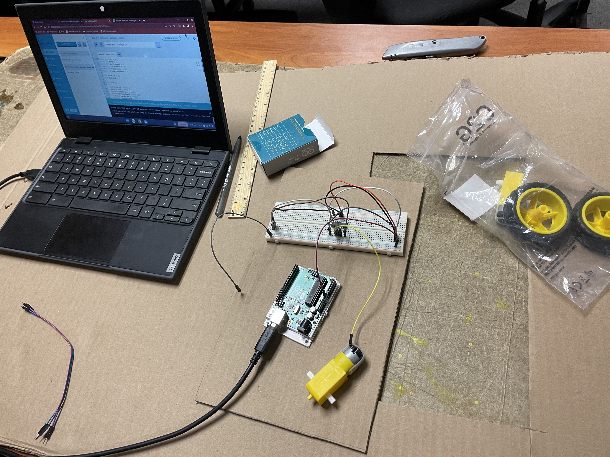

8/19/2022
Today I learned to make a very simple website with basic features.

 PDF of the Challenge
PDF of the Challenge
9/2/2022
This week I learned about the different types of engineering. The one that sticked out to me was chemical engineering, because I it involves microscopic engineering which is fascinating. At the end of the week we started planning the Rube Goldberg Simple Machine. I also tried to realisticly model a wafflemaker in Tinkercad on Thursday.
9/16/2022
This week we mostly worked on our Rube Golberg design. Our team worked with cardboard, cutting out the shapes to make the objects which are used in the design itself. On Thursday we made a paper boat and put 8 quarters in it. Unfortunately, it did not do great on water.
9/23/2022
This was the week of actually bulding the Rube Goldberg design. We used our individual designs to make a design for the group whcih included elements from the every individual design. The process of building was tough and the time was scarce. On the final day we did not have a working Rube Goldberg design untl the last minute of the class. However, even now it took multiple tries to acutally pop the balloon. It took so many tries that the TA did not even record the successful trial, as he already got exhausted from recording all the previous failures.


9/30/2022
This we we did not much, because Mr. Poole was absent due to his Covid. We made a tinkercad for a limb prosthetic for an animal. I chose a fish and made a prosthetic for its tail.
10/14/2022
We started a new project this week. We are going to build a rocket out of a bottle. We have already designed the overall image of it on TinkerCad. It looks pretty simple but we hope it will work.
10/24/2022
We finished our Bottle Rocket project. So far, it was the easiest one. Below are the pictures and the analysis form.
PDF of the Challenge11/1/2022
This week we learned about bioengineering. This type of engineering uses technology to alter the enviorment making beneficial changes both to humans and nature. We used sand, rocks, and cotton to clean a very dirty water. My improvised filter did not do a very good job.

11/4/2022
This week we began learning about circuits. We learned the Ohm's law which states that the current through a conductor between two points is directly proportional to the voltage across the two points. The formula is V=IR, where V is the voltage, I is the current, and R is the resistence. We designed a couple of cicuits on TinkerCad using LEDs.


11/10/2022
We started working on actual circuts and completed a couple of designs. We mainly used LEDs and resistors to create both direct and parallel structures. Also, we had an interesting debating challenge that required to argue which is better: to write down every number between 1 and 1,000,000 or take a math class. Me and my partner chose to advocate for the superiority of math.
PDF of the Challenge
11/18/2022
This week was intense. We got into programming a circuit, which was very interesting. We made the the LEDs light up with certain patterns as well as fade in and out. The challenge for this week tied back to Environmental Engineering couple of weeks ago. The objective was compelling, see the PDF attached. Over the thanksgiving break I intend to get really good sleep and work on my physics skills. I desperately need to extend my knowledge in physics. Other than that I will just be chilling with my family and freinds.
PDF of the Challenge
12/2/2022
We started our final project this week. It is an interesting and difficult assignment which is connected to Civil Engineering, bulding a spaghetti bridge. And it is even more complicated because of the condition that limits the allowed amount of spaghetti to only 20. During the first week, my group managed to make a design and build it, however it collapsed so quickly that we did not even have time to take some pictures. Below is the cad of our new design which we are hoping to build today.

12/9/2022
We dedicated this week to building the second design. We worked hard as the X's required pretty meticiulousness. We finally finished it at the end of the week. We are planning to test it next week.

12/16/2022
Our wonderful design broke without showing any fight. We saved the body of it, removed the arches and added reinforcement on the sides. The full chronology can be found on our presentation below.
Final - Presentation1/13/2023
Happy New Year! We immidately started a new project. This time it is mainly about business and the ability to sell. We were asked to come up with a product and make a presentation about it as well as our company to gain the support of investors. We made a presentation but it is not finished yet.
The Presentation1/20/2023
I missed three of the five classes this week. All because I strained my neck on Tuesday and locked my head in a firm postion unable to move it. What I missed was some business presentations. The good thing about this was that I got some rest. I am excited to return to class next week!
1/27/2023
This week combined both a fun activity and hard work. In the beginnign of the week we learned about chemical engineering, thus completing a lecture about the last type of engineering in our course. Then we went out and made a non-newtonian fluid. I played a lot with non-newtonian fluid when I was 7-9, so it was nice to revisit this "toy". And finally, we started our big projects. From all the options, I chose to make an arduino car. So far, I have no doubt that this is going to be the most interesitng project we have done.
2/3/2023
We started making the cads for our project. The first two days we spent on this, after which we missed a class due to the evacuation. Then I teamed up with Chris to participate in an intersting challenge on a Challenge Day. The objective was to make the longest bridge using 15 sticky notes. Chris and I cut the notes into quarters and connected them. After that, we cut this bridge in half and connected the two pieces making an even longer bridge. We evenutlaly won the first place. P.s. It is not our bridge in the image below.
2/10/2023
This week I began building my Arduino Car. I used the first couple of days to cut out the cardboard base. Then I got the electrical elements of the car and started attempting to program. So far programming seems a little confusing but doable. The images below is what I have so far.
2/17/2023
This week began with reorganizing and redisigning the project. The fact that I had cadded my design using 4 wheels and a motor driver shield, but I was provided with 2 wheels and no motor shield made me reconsider my card boare base. I cut out a new base that would fit the components including the breadboard which will now substitute the motor driver shield. I added a little elevated platform for the ultrasonic sensor on the board. Then I continiued programming and managed to get the motor to work. I also designed a third wheel out of cardboard and a stick. Next week, I plan to combine the parts and connect the sensor to the system.
2/24/2023
This week was the most interesting and intense week I have had in this class. Everyday, after the class ened I couldn't wait to coming to school the next day and continue working on my project. I finished the wiring of my car as well as secured the components inside the body. The program is working and all that is left is to put on the wheels and finish the roof of the car. Feel excited about next week!